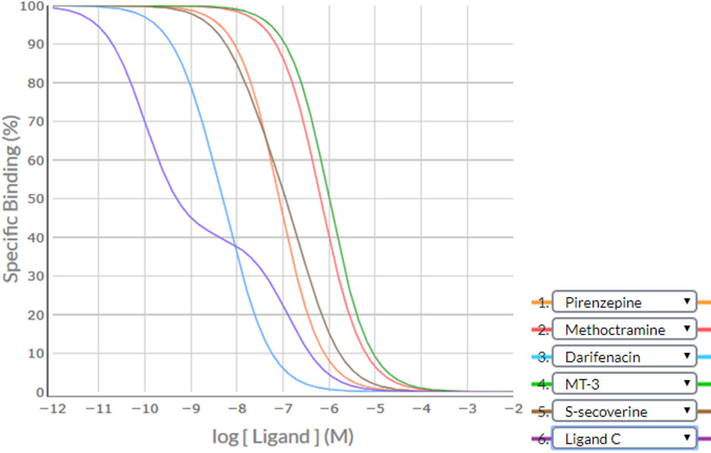
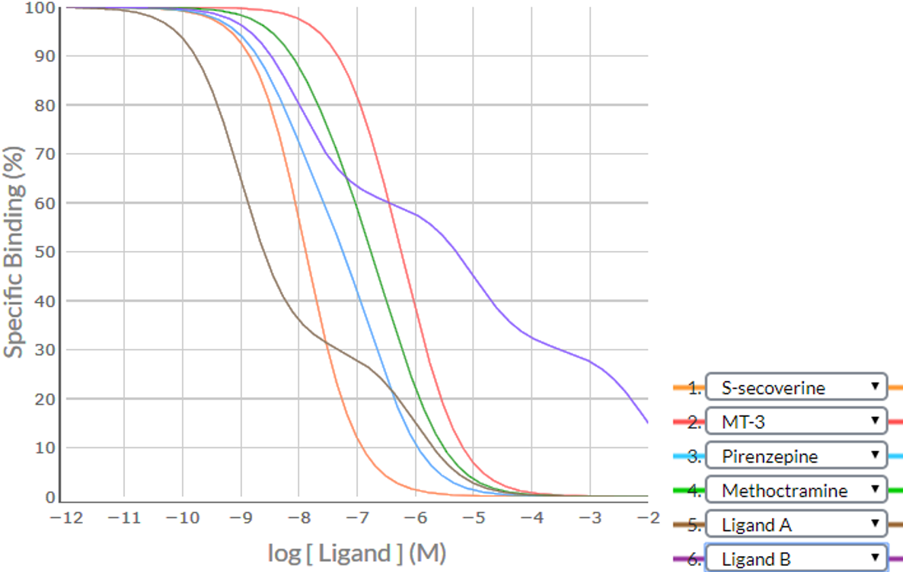

Provided below are worked examples (of increasing complexity) that demonstrate how visual inspection of competition binding curves and the application of the SPIKES approach can often be used to definitively determine which receptor subtypes are present within a particular cell/tissue and if more than one receptor is present, their relative densities. Pay particular attention to the notes provided at the end of most of the examples as they provide special insight into the process.
The questions posed in the Quiz Tool are similar in style and difficulty to the worked Examples #4, #5 and #6 (the Quiz Tool does not present triphasic competition binding curves as posed in worked Example #7).
SPIKES Examples
Apply the SPIKES approach to the following competition binding curve for MT-3 to determine which M cholinoceptor subtype(s) is (are) present in the cell/tissue.
Shape / Position
Visual inspection of the MT-3 competition binding curve indicates that it is inverse sigmoidal, but is it steep sigmoidal or shallow sigmoidal? For a competition binding curve to be considered steep sigmoidal then the extent of %Specific Binding covered by logIC50 ± 1.0 should be greater than 80% - if it is less than 80% then the curve is considered shallow sigmoidal. Firstly, determine the logIC50 value for MT-3, i.e. -8.1. Then determine the %Specific binding values at the [MT-3] that is 1.0 log unit below the –logIC50 (-9.1) and at 1.0 log unit above the –logIC50 (-7.1). As shown in the figure below, the levels of %Specific binding are 90.9% and 9.1%, respectively. The difference (90.9% – 9.1% = 81.8%) is greater than 80% - thus, the competition binding curve is considered steep sigmoidal. This indicates that MT-3 is binding to a population of receptors for which it has similar affinity – for MT-3 that would be either a pure population of M4 receptors for which it has high affinity (-logKi = 8.1) or a population of M1 and/or M2 and/or M3 and/or M5 receptors for which it has a much lower affinity (range of –logKi values 5.9-6.7).
IC50 / Ki value
As a very low concentration of radioligand was used in the study (compared to the Kd of the radioligand), the –logIC50 ~ -logKi and so the –logKi value for MT-3 = 8.1. If a higher concentration of radioligand had been used then the Cheng-Prusoff equation would have been used to convert the IC50 value into the Kivalue.
Elimination / Summation
When we compare the –logKi value of 8.1 to the known –logKi values of MT-3 for M1 (6.7), M2 (5.9), M3 (6.0), M4 (8.1) and M5 (6.0) the –logKi value of 8.1 is ≥ 1 log unit different to the known –logKi values of MT-3 binding to M1, M2, M3 and M5 receptors – and only similar to the –logKi value of 8.1 expected for MT-3 binding to M4 receptors.
Thus, visual inspection of the MT-3 competition binding curve indicates that it is highly unlikely that the cell/tissue contains significant populations of either M1, M2, M3 or M5 receptors (eliminated because experimental and known –logKi values for MT-3 ≥ 1 log unit different), and the only reasonable conclusion is that the cell/tissue contains a homogeneous population of M4 receptors.
Apply the SPIKES approach to the following competition binding curve for S-secoverine to determine which M cholinoceptor subtype(s) is (are) present in this cell/tissue.
Shape / Position
Visual inspection of the S-secoverine competition binding curve indicates that it is inverse sigmoidal, but is it steep sigmoidal or shallow sigmoidal? For a competition binding curve to be considered steep sigmoidal then the extent of %Specific Binding covered by logIC50 ± 1.0 should be greater than 80% - if it is less than 80% then the curve is considered shallow sigmoidal. Firstly, determine the logIC50 value for each competing ligand, which in this example is -6.5. Then determine the %Specific binding values at the [S-secoverine] that is 1.0 log unit below the –logIC50 (-7.5) and at 1.0 log unit above the –logIC50 (-5.5). As shown in the figure below, the levels of %Specific binding are 90.9% and 9.1%, respectively. The difference (90.9% – 9.1% = 81.8%) is greater than 80% - thus, the competition binding curve is considered steep sigmoidal. This indicates that S-secoverine is binding to a population of receptors for which it has similar affinity – for S-Secoverine that would be either a pure population of M5 receptors for which it has low affinity (-logKi = 6.5) or a population of M1 and/or M2 and/or M3 and/or M4 receptors for which it has much higher affinity (range of –logKi values 7.7-8.0).
IC50 / Ki value
As a very low concentration of radioligand was used in the study (compared to the Kd of the radioligand), the –logIC50 ~ -logKi and so the –logKi value for S-secoverine = 6.5. If a higher concentration of radioligand had been used then the Cheng-Prusoff equation would have been used to convert the IC50 value into the Kivalue.
Elimination / Summation
When we compare the –logKi value of 6.5 to the known –logKi values of S-secoverine for M1 (8.0), M2 (7.9), M3 (7.7), M4 (7.7) and M5 (6.5) the –logKi value of 6.5 is ≥ 1 log unit different to the known –logKi values of S-secoverine binding to M1, M2, M3 and M4 receptors – and only similar to the –logKi value of 6.5 expected for S-secoverine binding to M5 receptors.
Thus, visual inspection of the S-secoverine competition binding curve indicates that it is highly unlikely that the cell/tissue contains significant populations of M1, M2, M3 or M4 receptors (eliminated because experimental and known –logKi values ≥ 1 log unit different), and the only reasonable conclusion is that the cell/tissue contains a homogeneous population of M5 receptors.
Note: Examples #1 (MT-3 to identify M4 receptors) and #2 (S-secoverine to identify M5 receptors) are examples whereby the use of a –logKi value obtained from a single competing ligand can successfully identify which receptor is present in a cell/tissue. Similarly, from the list of established ligands provided, DAU-5884 could also be used to identify M2 receptors in a cell/tissue. However, in all other situations more than one receptor-selective ligand would need to be used within a competition binding study to conclusively identify the M receptor subtypes present in a cell/tissue.
Apply the SPIKES approach to the following competition binding curve for S-secoverine to determine which M cholinoceptor subtype(s) is (are) present in this cell/tissue.
Shape / Position
Visual inspection of the S-secoverine competition binding curve indicates that it is inverse sigmoidal, but is it steep sigmoidal or shallow sigmoidal? For competition binding curves to be considered steep sigmoidal then the extent of %Specific Binding covered by logIC50 ± 1.0 should be greater than 80% - if it is less than 80% then the curve is considered shallow sigmoidal. Firstly, determine the logIC50 value for each competing ligand, which in this example is -7.7. Then determine the %Specific binding values at the [S-secoverine] that is 1.0 log unit below the –logIC50 (-8.7) and at 1.0 log unit above the –logIC50 (-6.7). As shown in the figure below, the levels of %Specific binding are 90.9% and 9.1%, respectively. The difference (90.9% – 9.1% = 81.8%) is greater than 80% - thus, the competition binding curve is considered steep sigmoidal. This indicates that S-secoverine is binding to a population of receptors for which it has similar affinity – for S-Secoverine that would be either a pure population of M5 receptors for which it has low affinity (-logKi = 6.5) or a population of M1 and/or M2 and/or M3 and/or M4 receptors for which it has higher affinity (range of –logKi values 7.7-8.0).
IC50 / Ki value
As a very low concentration of radioligand was used in the study (compared to the Kd of the radioligand), the –logIC50 ~ -logKi and so the –logKi value for S-secoverine = 7.7. If a higher concentration of radioligand had been used then the Cheng-Prusoff equation would have been used to convert the IC50 value into the Kivalue.
Elimination / Summation
When we compare the visually-determined –logKi value of 7.7 to the known –logKi values of S-secoverine for M1 (8.0), M2 (7.9), M3 (7.7), M4 (7.7) and M5 (6.5) the visually-determined –logKi value of 7.7 is ≥ 1 log unit different to the –logKi values expected for S-secoverine binding to M5 receptors (6.5), but similar to the –logKi values expected for S-secoverine binding to M1, M2, M3 and M4 receptors (7.7-8.0).
Thus, visual inspection of the S-secoverine competition binding curve indicates that it is highly unlikely that the cell/tissue contains a significant population of M5 receptors (eliminated because experimental and known –logKi values ≥ 1 log unit different), but it is not possible to conclude whether the cell/tissue contains M1 &/or M2 &/or M3 &/or M4 receptors. Clearly additional competition binding curves using ligands that can differentiate between (are selective for) M1, M2, M3 and M4 receptors would need to be conducted.
Note: Determining which of the 5 receptor subtypes are present within a cell/tissue may require conducting a competition binding study that utilises 5 competing ligands, each of which shows at least some selectivity for a particular receptor subtype – for example, using pirenzepine (M1-selective over M2, M3 and M5 receptors), methoctramine (M2-selective over M1, M3 and M5 receptors), darifenacin (M3-selective over M1, M2 and M4 receptors), MT-3 (M4-selective over all other M subtypes), and S-secoverine (M5-selective over all other M subtypes) – as shown in Example #4 below.
Consider an example where a competition binding study was conducted using the five ligands – pirenzepine, methoctramine, darifenacin, MT-3 and S-secoverine. Apply the SPIKES approach to the following competition binding curves to determine which M cholinoceptor subtype(s) is (are) present in this cell/tissue.

Visual inspection of the all the curves indicates that that they are inverse sigmoidal, but are they steep sigmoidal or shallow sigmoidal? For competition binding curves to be considered steep sigmoidal then the extent of %Specific Binding covered by logIC50 ± 1.0 should be greater than 80% - if it is less than 80% then the curve is considered shallow sigmoidal. Notice in the Table below the analysis of the Shape / Position of each of the curves, and the conclusion that all competition binding curves are steep sigmoidal. This is suggestive that each of the competing ligands is binding to a single population of receptors for which they have a particular affinity (M1 or M2 or M3 or M4 or M5). It is unlikely that there is more than one receptor subtype present as none of the five competition binding curves is shallow sigmoidal.
Shape / Position
| Competing Ligand | Visually-determined logIC50 value> | Specific Binding (%) at logIC50-1 | Specific Binding (%) at logIC50+1 | Difference | Shape |
|---|---|---|---|---|---|
| Pirenzepine | -6.5 | (-7.5) 90.9 | (-5.5) 9.1 | 90.9 - 9.1 = 81.8% | Steep |
| Methoctramine | -7.7 | (-8.7) 90.9 | (-6.7) 9.1 | 90.9 - 9.1 = 81.8% | Steep |
| Darifenacin | -7.0 | (-8.0) 90.9 | (-6.0) 9.1 | 90.9 - 9.1 = 81.8% | Steep |
| MT-3 | -5.9 | (-6.9) 90.9 | (-4.9) 9.1 | 90.9 - 9.1 = 81.8% | Steep |
| S-secoverine | -7.9 | (-8.9) 90.9 | (-6.9) 9.1 | 90.9 - 9.1 = 81.8% | Steep |
IC50 / Ki value
As a very low concentration of radioligand was used in the study (compared to the Kd of the radioligand), the –logIC50 -logKi. The –logKi values are displayed in the table below along with the known –log Kivalues of these ligands for all receptor subtypes.
| Competing ligand | Visually-determined -logKi value | Known -logKi values | ||||
|---|---|---|---|---|---|---|
| M1 | M2 | M3 | M4 | M5 | ||
| Pirenzepine | 6.5 | 8.2 | 6.5 | 6.9 | 7.4 | 7.2 |
| Methoctramine | 7.7 | 6.7 | 7.7 | 6.0 | 7.0 | 6.3 |
| Darifenacin | 7.0 | 7.8 | 7.0 | 8.8 | 7.7 | 8.0 |
| MT-3 | 5.9 | 6.7 | 5.9 | 6.0 | 8.1 | 6.0 |
| S-secoverine | 7.9 | 8.0 | 7.9 | 7.7 | 7.7 | 6.5 |
Elimination / Summation
By sequentially comparing the visually-determined and known –logKi values for each competing ligand and using the principles discussed above:
Pirenzepine eliminates the likelihood of M1 receptor being present in the cell/tissue
– visually-determined –logKi value of 6.5 is ≥ 1 log unit different than that expected for pirenzepine binding to the M1 receptor (8.2)
Methoctramine eliminates the likelihood of M3 and M5 receptors being present in the cell/tissue
– visually-determined –logKi value of 7.7 is ≥ 1 log unit different than that expected for methoctramine binding to the M3 (6.0) & M3 (6.3) receptors
Darifencin eliminates the likelihood of M3 receptors being present in the cell/tissue
– visually-determined –logKi value of 7.0 is ≥ 1 log unit different than that expected for darifenacin binding to the M3 receptor (8.8)
MT-3 eliminates the likelihood of M4 receptors being present in the cell/tissue
– visually-determined –logKi value of 5.9 is ≥ 1 log unit different than that expected for MT-3 binding to the M4 receptor (8.1)
S-secoverine eliminates the likelihood of M5 receptors being present in the cell/tissue
– visually-determined –logKi value of 7.9 is ≥ 1 log unit different than that expected for S-secoverine binding to the M5 receptor (6.5)
Thus, visual inspection of the presented competition binding curves indicates that the cell/tissue did not contain significant populations of M1 receptors (eliminated by pirenzepine), M3 receptors (eliminated by methoctramine and darifenacin), M4 receptors (eliminated by MT-3) or M5 receptors (eliminated by S-secoverine). Thus, the only reasonable conclusion is that the cell/tissue contains a homogeneous population of M2 receptors.
Note: The visually-determined–logKi values for each of the competing ligands is similar to their known –logKi values at M2 receptors, confirming the conclusion drawn.
Consider an example where a competition binding study was conducted using six ligands – 5 established ligands (pirenzepine, methoctramine, darifenacin, MT-3, S-secoverine) and the hypothetical ligand Ligand C. Apply the SPIKES approach to the following competition binding curves to determine which M cholinoceptor subtype(s) is (are) present in this cell/tissue.
Shape / Position
| Competing Ligand | Visually-determined logIC50 value> | Specific Binding (%) at logIC50-1 | Specific Binding (%) at logIC50+1 | Difference | Shape |
|---|---|---|---|---|---|
| Pirenzepine | -7.1 | (-8.1) 90.5 | (-6.1) 9.5 | 90.5 - 9.5 = 81.0% | Steep |
| Methoctramine | -6.2 | (-7.2) 90.5 | (-5.2) 9.5 | 90.5 - 9.5 = 81.0% | Steep |
| Darifenacin | -8.3 | (-9.3) 87.8 | (-7.3) 11.4 | 87.8 - 11.4 = 76.4% | Shallow |
| MT-3 | -6.0 | (-7.0) 90.9 | (-5.0) 9.1 | 90.9 - 9.1 = 81.8% | Steep |
| S-secoverine | -6.9 | (-7.9) 82.2 | (-5.9) 12.7 | 82.2 - 12.7 = 69.5% | Shallow |
| Ligand C | biphasic with point of inflection at 40% Specific binding | ||||
Visual inspection indicates that two competition binding curves are shallow sigmoidal (darifenacin and S-secoverine) and one is biphasic (Ligand C), providing strong evidence that there is a heterogeneous population of receptors (more than one subtype of M receptor). The position of the point of inflection at the 40% Specific Binding level suggests that one receptor subtype makes up 40% of the population and another the remaining 60% of the receptor population.
IC50 / Ki value
As a very low concentration of radioligand was used in the study (compared to the Kd of the radioligand), the –logIC50 -logKi. For the steep sigmoidal curves of pirenzepine, methoctramine and MT-3 the –logIC50 = -logKi, whereas for the shallow sigmoidal curves (darifenacin, S-secoverine), the single –logIC50 cannot be used as a single –logKivalues as it is a composite value of the two different –logKi values at the two different receptors.
Elimination / Summation
It is helpful to firstly analyse the –logKi values of the steep sigmoidal curves, with the possibility of perhaps eliminating some receptor subtypes. In this example, there are 3 ligands that generated steep sigmoidal curves – pirenzepine, methoctramine and MT-3.
| Competing ligand | Visually-determined -logKi value | Known -logKi values | ||||
|---|---|---|---|---|---|---|
| M1 | M2 | M3 | M4 | M5 | ||
| Pirenzepine | 7.1 | 8.2 | 6.5 | 6.9 | 7.4 | 7.2 |
| Methoctramine | 6.2 | 6.7 | 7.7 | 6.0 | 7.0 | 6.3 |
| MT-3 | 6.0 | 6.7 | 5.9 | 6.0 | 8.1 | 6.0 |
Pirenzepine eliminates the likelihood of M1 receptor being present in the cell/tissue
– visually-determined –logKi value of 7.1 is ≥ 1 log unit different than that expected for pirenzepine binding to the M1 receptor (8.2)
Methoctramine eliminates the likelihood of M2 receptors being present in the cell/tissue
– visually-determined –logKi value of 6.2 is ≥ 1 log unit different than that expected for methoctramine binding to the M2 receptor (7.7)
MT-3 eliminates the likelihood of M4 receptors being present in the cell/tissue
– visually-determined –logKi value of 6.0 is ≥ 1 log unit different than that expected for MT-3 binding to the M4 receptor (8.1)
Thus the cell/tissue does not contain significant populations of either M1, M2 or M4 receptors, indicating that the 2 receptor subtypes that are present are likely M3 and M5 receptors – but which one accounts for 40% of the population and which one accounts for the remaining 60%?
Answering this question requires analysing the –logKi values of the two separate phases of the biphasic curve of Ligand C.
| Competing ligand | Visually-determined -logKi value | Known -logKi values | ||||
|---|---|---|---|---|---|---|
| M1 | M2 | M3 | M4 | M5 | ||
| Ligand C (1st phase) | 10.0 | 7.0 | 7.1 | 6.9 | 10.0 | 10.1 |
| Ligand C (2nd phase) | 7.0 | 7.0 | 7.1 | 6.9 | 10.1 | 10.0 |
The first phase of the Ligand C competition binding curve had a –logKi value of 10.0 – so we can eliminate the likelihood of M1, M2 or M3 receptors, leaving just the possibility of M4 or M5 receptors. However, MT-3 has previously eliminated M4 receptors, so the only reasonable conclusion (based on this process of elimination is the first phase of the Ligand C competition binding curve reflects Ligand C binding to high affinity M5 receptors, which accounts for 60% of all M receptors.
Likewise, the second phase of the Ligand C competition binding curve had a –logKi value of 7.0 – so we can eliminate the likelihood of M4 or M5 receptors, leaving just the possibility of M1, M2 or M3 receptors. However, pirenzepine and methoctramine have previously eliminated M1 and M2 receptors, respectively, so the only reasonable conclusion (based on this process of elimination) is the second phase of the Ligand C competition binding curve reflects Ligand C binding to lower affinity M3 receptors, which accounts for 40% of all M receptors.
Thus, visual inspection of the presented competition binding curves indicates that the cell/tissue contains a mixture of 40%M3 and 60%M5 receptors.
Note: As expected, the ‘composite –logKi values’ obtained for the shallow sigmoidal curve of darifenacin (8.3) lay between the known –logKi values of darifenacin for M3 (8.8) and M5 (8.0) receptors, and the ‘composite –logKi values’ obtained for the shallow sigmoidal curve of S-secoverine (6.9) lay between the known –logKi values of S-secoverine for M3 (7.7) and M5 (6.5) receptors).
Consider an example where a competition binding study was conducted using the 5 established ligands pirenzepine, methoctramine, darifenacin, MT-3 and S-secoverine. Apply the SPIKES approach to the following competition binding curves to determine which M cholinoceptor subtype(s) is (are) present in this cell/tissue.Note that the competition binding curve for methoctramine (RED) cannot be clearly seen because it lays behind the curve for MT-3 (GREEN).
Shape / Position
| Competing Ligand | Visually-determined logIC50 value> | Specific Binding (%) at logIC50-1 | Specific Binding (%) at logIC50+1 | Difference | Shape |
|---|---|---|---|---|---|
| Pirenzepine | -7.4 | (-8.4) 82.7 | (-6.4) 15.0 | 82.7 - 15.0 = 67.7% | Shallow |
| Methoctramine | -6.3 | (-7.3) 89.1 | (-5.3) 11.5 | 89.1 - 11.5 = 77.6% | Shallow |
| Darifenacin | -8.4 | (-9.4) 87.0 | (-7.4) 13.7 | 87.0 - 13.7 = 73.3% | Shallow |
| MT-3 | -6.3 | (-7.3) 89.1 | (-5.3) 11.5 | 89.1 - 11.5 = 77.6% | Shallow |
| S-secoverine | -7.8 | (-8.8) 90.1 | (-6.8) 9.1 | 90.1 - 9.1 = 81.0% | Steep |
As there are four competition binding curves that are shallow sigmoidal (pirenzepine, methoctramine, darifenacin and MT-3), it is clear that there is a heterogeneous population of receptors (more than one subtype of M receptor). There are no biphasic curves thus the relative densities of the receptor subtypes present cannot be determined visually – determination of the relative densities would require the fitting of the data to a two-site (or multiple-site) binding model, and solving using computer-assisted analysis.
IC50 / Ki value
As a very low concentration of radioligand was used in the study (compared to the Kd of the radioligand), the –logIC50 ~ -logKi . For the steep sigmoidal curve of S-secoverine the –logIC50 = -logKi, whereas for the shallow sigmoidal curves (pirenzepine, methoctramine, darifenacin and MT-3), the single –logIC50 cannot be used as a single –logKi values as it is a composite value of the two (or more) different –logKi values at the two (or more) different receptors.
Elimination / Summation
It is helpful to firstly analyse the –logKi values of the steep sigmoidal curves, with the possibility of perhaps eliminating some receptor subtypes. In this example, there is only 1 ligand that generated steep sigmoidal curves – S-secoverine.
| Competing ligand | Visually-determined -logKi value | Known -logKi values | ||||
|---|---|---|---|---|---|---|
| M1 | M2 | M3 | M4 | M5 | ||
| S-secoverine | 7.8 | 8.0 | 7.9 | 7.7 | 7.7 | 6.5 |
S-secoverine eliminates the likelihood of the M5 receptor being present in the cell/tissue
– visually-determined –logKi value of 7.8 is ≥ 1 log unit different than that expected for S-secoverine binding to the M5 receptor (6.5)
Thus the cell/tissue does not contain M5 receptors, but we can’t definitively determine whether it contains M1 and/or M2 and/or M3 and/or M4 receptors. Some indication of which of M1 or M2 or M3 or M4 receptors might be present can be obtained from further analysis of the shallow sigmoidal competition binding curves.
| Competing ligand | Visually-determined -logIC50 value | Known -logKi values | ||||
|---|---|---|---|---|---|---|
| M1 | M2 | M3 | M4 | M5* | ||
| Pirenzepine | 7.4 | 8.2 | 6.5 | 6.9 | 7.4 | - |
| Methoctramine | 6.3 | 6.7 | 7.7 | 6.0 | 7.0 | - |
| Darifenacin | 8.4 | 7.8 | 7.0 | 8.8 | 7.7 | - |
| MT-3 | 6.3 | 6.7 | 5.9 | 6.0 | 8.1 | - |
*M5 values not considered because this receptor subtype has already been eliminated.
It is unlikely that a significant population of M2 receptors is present in the cell/tissue because it would expected that the visually-determined –logIC50 value (6.3) for methoctramine would be much closer to the known –logKi value of methoctramine for M2 receptors (7.7).
Similarly, it is unlikely that a significant population of M4 receptors is present in the cell/tissue because it would expected that the visually-determined –logIC50 value (6.3) for MT-3 would be much closer to the known –logKi value of MT-3 for M4 receptors (8.1).
This might indicate that the receptor subtypes present are a mixture of M1 and M3 receptors. If this were the case, we would expect that the visually-determined –logIC50 values for all the competing ligands would lay between the –logKi values of the ligands for M1 and M3 receptors – and this is the case as can be seen in the Table below.
| Competing ligand | Visually-determined -logIC50 value | Known -logKi values | ||||
|---|---|---|---|---|---|---|
| M1 | M2 | M3 | M4 | M5* | ||
| Pirenzepine | 7.4 | 8.2 | - | 6.9 | - | - |
| Methoctramine | 6.3 | 6.7 | - | 6.0 | - | - |
| Darifenacin | 8.4 | 7.8 | - | 8.8 | - | - |
| MT-3 | 6.3 | 6.7 | - | 6.0 | - | - |
| S-secoverine | 7.8 | 8.0 | - | 7.7 | - | - |
Thus, visual inspection of the presented competition binding curves indicate the cell/tissue:
1. does not contain a significant population of M5 receptors (eliminated by S-secoverine)
2. is unlikely to contain a significant population of M2 or M4 receptors (based on methoctramine and MT-3 data – BUT both these curves were shallow sigmoidal, so conclusions based on visual inspection are not definitive)
3. likely contains a mixture of M1 and M3 receptors, but of unknown relative density as no competition binding curve was biphasic. Further computer-assisted analysis of the competition binding curves using a two-site binding model is required to confirm these conclusions.
Note 1: This example has many caveats in the conclusion compared to previous examples #1 - #5.
Note 2: Neither of the other available established ligands (solifenacin and DAU-5884) would have been useful in distinguishing between M1 and M3 receptors in the example because both ligands have very similar affinities (-logKi values) for M1 and M3 receptors (see –logKi reference Table). On the other hand, either of the hypothetical ligands Ligand A or Ligand B would have been particularly useful for determining the M receptor subtypes present in this cell/tissue because both ligands have markedly different affinities for M1 and M3 receptors (1,000- and 1,000,000-fold, respectively, as per –logKi Reference Table).
Consider an example where a competition binding study was conducted using the 4 established ligands (S-secoverine, MT-3, pirenzepine and methoctramine) and 2 hypothetical ligands (Ligand A and Ligand B). Apply the SPIKES approach to the following competition binding curves to determine which M cholinoceptor subtype(s) is (are) present in this cell/tissue.
Shape / Position
| Competing Ligand | Visually-determined logIC50 value> | Specific Binding (%) at logIC50-1 | Specific Binding (%) at logIC50+1 | Difference | Shape |
|---|---|---|---|---|---|
| S-secoverine | -7.9 | (-8.9) 91.0 | (-6.9) 9.8 | 91.0 - 9.8 = 81.2% | Steep |
| MT-3 | -6.2 | (-7.2) 87.2 | (-5.2) 10.3 | 87.2 - 10.3 = 78.9% | Shallow |
| Pirenzepine | -7.2 | (-8.2) 78.0 | (-6.2) 15.4 | 78.0 - 15.4 = 62.6% | Shallow |
| Methoctramine | -6.8 | (-7.8) 83.8 | (-5.8) 16.5 | 83.3 - 16.5 = 66.8% | Shallow |
| Ligand A | Biphasic with point of inflection at 30% Specific binding | ||||
| Ligand B | Triphasic with POIs at 60% and 30% Specific binding | ||||
Visual inspection indicates there is one steep sigmoidal curve (S-secoverine), three shallow sigmoidal curves (MT-3, pirenzepine and methoctramine), onebiphasic curve (Ligand A) and one triphasic curve (Ligand B), providing strong evidence that there is a heterogeneous population of receptors (at least 3 subtypes of M receptor). The position of the POIs at the 60% and 30% Specific Binding level for Ligand B suggests that one receptor subtype makes up 40% of the population and the other two make up 30% each (making a total of 100%).
IC50 / Ki value
As a very low concentration of radioligand was used in the study (compared to the Kd of the radioligand), the –logIC50 ~ -logKi . For the steep sigmoidal curve of S-secoverine the –logIC50 = -logKi, whereas for the shallow sigmoidal curves (MT-3, pirenzepine and methoctramine), the single –logIC50 cannot be used as a single –logKi values as it is a composite value of the three different –logKi values at the three different receptors.
Elimination / Summation
It is helpful to firstly analyse the –logKi values of the steep sigmoidal curve, with the possibility of perhaps eliminating some receptor subtypes. In this example, there is only one ligand that generated a steep sigmoidal curve – S-secoverine.
| Competing ligand | Visually-determined -logKi value | Known -logKi values | ||||
|---|---|---|---|---|---|---|
| M1 | M2 | M3 | M4 | M5 | ||
| S-secoverine | 7.9 | 8.0 | 7.9 | 7.7 | 7.7 | 6.5 |
S-secoverine eliminates the likelihood of the M5 receptor being present in the cell/tissue
– visually-determined –logKi value of 7.9 is ≥ 1 log unit different than that expected for S-secoverine binding to the M5 receptor (6.5)
Thus the cell/tissue does not contain a significant population of M5 receptors. Determining which of M1 and/or M2 and/or M3 and/or M4 receptors are present and their relative densities requires analysing the –logKi values of the different phases of the multiphasic curves. Let’s start with Ligand B because that is triphasic and may provide some key information.
| Competing ligand | Visually-determined -logKi value | Known -logKi values | ||||
|---|---|---|---|---|---|---|
| M1 | M2 | M3 | M4 | M5 | ||
| Ligand B (1st phase) | 8.0 | 8.0 | 5.0 | 2.0 | 5.0 | 8.0 |
| Ligand B (2nd phase) | 5.0 | 8.0 | 5.0 | 2.0 | 5.0 | 8.0 |
| Ligand B (3rd phase) | 2.0 | 8.0 | 5.0 | 2.0 | 5.0 | 8.0 |
The first phase of the Ligand B competition binding curve has a –logKi value of 8.0 – so we can eliminate the likelihood of M2, M3 or M4 receptors, leaving just the possibility of M1 or M5 receptors being responsible for this specific phase. However, S-secoverine has previously eliminated M5 receptors, so the only reasonable conclusion (based on this process of elimination) is the first phase of the Ligand B competition binding curve reflects Ligand B binding to high affinity M1 receptors, which accounts for 40% of all M receptors.
The second phase of the Ligand B competition binding curve has a –logKi value of 5.0 – so we can eliminate the likelihood of M1, M3 or M5 receptors, leaving just the possibility of M2 and/or M4 receptors being responsible for this particular phase.
The third phase of the Ligand B competition binding curve has a –logKi value of 2.0 – so we can eliminate the likelihood of M1, M2, M4 or M5 receptors, leaving just the possibility of M3 receptors being responsible for this specific phase. Thus, the only reasonable conclusion (based on this process of elimination) is the third phase of the Ligand B competition binding curve reflects Ligand B binding to low affinity M3 receptors, which accounts for 30% of all M receptors.
So with Ligand B, we have confirmed that M1 and M3 receptors are present in the relative proportions of 40% and 30% respectively. Thus, the remaining population of 30% M receptors must be M2 and/or M4 receptors. Can the Ligand A competition binding curve shed any light?
| Competing ligand | Visually-determined -logKi value | Known -logKi values | ||||
|---|---|---|---|---|---|---|
| M1 | M2 | M3 | M4 | M5 | ||
| Ligand A (1st phase) | 9.0 | 9.0 | 9.0 | 6.0 | 6.0 | 2.0 |
| Ligand A (2nd phase) | 6.0 | 9.0 | 9.0 | 6.0 | 6.0 | 2.0 |
The first phase of the Ligand A competition binding curve had a –logKi value of 9.0 – so we can eliminate the likelihood of M3, M4 or M5 receptors, leaving just the possibility of M1 and/or M2 receptors being responsible for this specific phase. This first phase of Ligand A binding accounts for 70% of Specific binding and we know from the analysis of Ligand B above that the cell/tissue contains 40%M1 receptors, so the remaining 30% of the binding of Ligand A in this phase must be to M2 receptors.
The second phase of the Ligand A competition binding curve had a –logKi value of 6.0 – so we can eliminate the likelihood of M1, M2 or M5 receptors being responsible for this phase, leaving just the possibility of M3 and/or M4 receptors being responsible for this particular phase. As this phase accounts for 30% of Specific binding and we have already established that the M3 subtype accounts for 30% of total M receptors present, we can eliminate the possibility that a significant population of M4 receptors being present in the cell/tissue.
Thus, visual inspection of the presented competition binding curves indicates that the cell/tissue contains a mixture of 40%M1, 30%M2 and 30%M3 receptors.
Note 1: As expected, the ‘composite –logKi values’ obtained for the shallow sigmoidal curve of MT-3 (6.2), pirenzepine (7.2) and methoctramine (6.8) lay between the known –logKi values of these ligands for M1, M2 and M3 receptors.
Note 2: As demonstrated in the Examples of competition binding studies presented above, the process of determining which receptors are present (and their relative densities) in a particular cell/tissue using the SPIKES approach is best conducted in a systematic way.
STEP 1. Identify the competition binding curves that are steep sigmoidal and analyse these first – this may lead to the elimination of particular receptor subtypes, making further analyses simpler.
STEP 2. Identify the competition binding curves that are clearly multiphasic – this will often provide important information regarding the relative densities of M receptor subtypes.
STEP 3. Analyse the shallow sigmoidal competition binding curves last, as visual inspection of these curves is likely to provide indicative (e.g. composite –logIC50 and –logKi values), rather than definitive information (true –logIC50 and –logKi values). Shallow sigmoidal competition binding curves are best analysed by fitting the data to more complex binding models (2-site, 3-site, etc.) using computer-assisted approaches. This approach enables the estimation of true –logKi values of the competing ligand to each of the multiple sites (rather than relying on the composite –logKi value obtained by visual inspection).